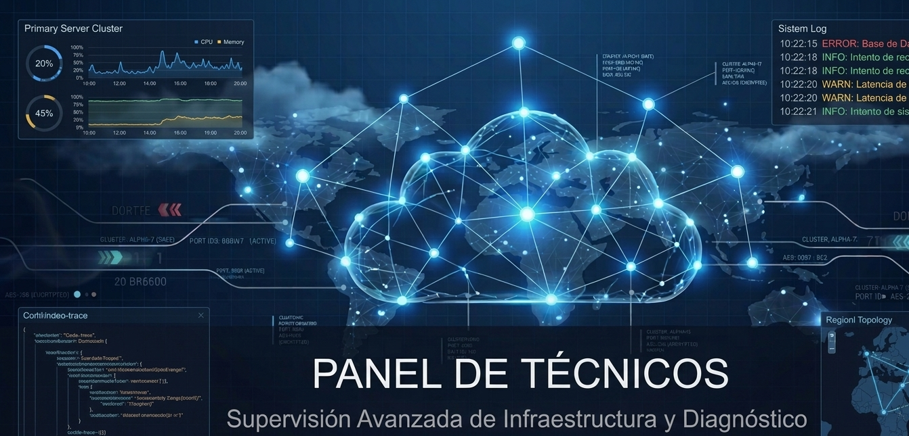

Equipo Técnico
Profesionales especializados en soporte IT, hardening y monitorización.
Esta plantilla es ficticia y sirve como demostración.

Técnicos Disponibles
Laura Martínez
Especialista en Soporte IT
Resolución de incidencias, mantenimiento y asistencia remota.
Carlos Gómez
Ingeniero de Hardening
Endurecimiento de servidores, seguridad avanzada y auditorías.
Andrea Ruiz
Analista de Monitorización
Supervisión 24/7, alertas inteligentes y análisis predictivo.
Javier Torres
Administrador de Redes
Gestión de infraestructura, firewalls y conectividad.